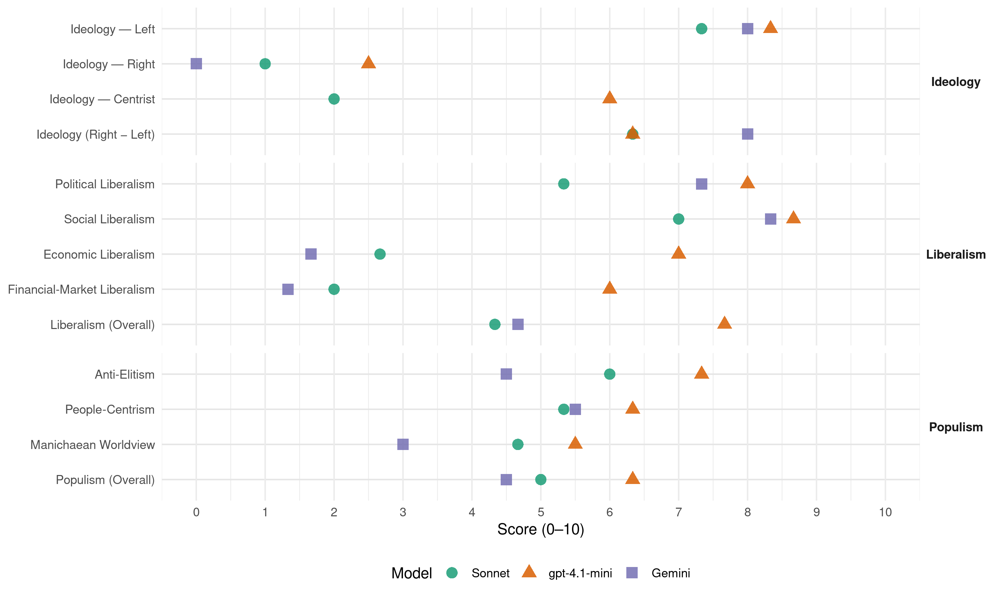

SV (Norway, 1993)
manifesto_id 12221_199309
Get full text: This site shows derived annotations and short verbatim quotes only. The full manifesto text is © Manifesto Project / WZB — obtain it via manifesto-project.wzb.eu using the manifesto_id above.
Headline scores
| Dimension | Sonnet | gpt-4.1-mini | Gemini |
|---|---|---|---|
| Populism (Overall) | 5.0 | 6.3 | 4.5 |
| Anti-Elitism | 6.0 | 7.3 | 4.5 |
| People-Centrism | 5.3 | 6.3 | 5.5 |
| Manichaean Worldview | 4.7 | 5.5 | 3.0 |
| Ideology (Right − Left) | 6.3 | 6.3 | 8.0 |
| Liberalism (Overall) | 4.3 | 7.7 | 4.7 |
| Political Liberalism | 5.3 | 8.0 | 7.3 |
| Social Liberalism | 7.0 | 8.7 | 8.3 |
| Economic Liberalism | 2.7 | 7.0 | 1.7 |
| Financial-Market Liberalism | 2.0 | 6.0 | 1.3 |
Evidence per dimension
Economic Liberalism
Gemini · score 1.0 · verified · chunk 1
“markedskapitalismens spillerom radikalt begrenses”
Uten et systemskifte, uten at markedskapitalismens spillerom radikalt begrenses, kan ikke SV love
Gemini · score 2.0 · verified · chunk 2
“pris produksjon og omsetting kan styres”
endres slik at både pris produksjon og omsetting kan styres
Gemini · score 2.0 · verified · chunk 3
“lov om demokratisk overskuddskontroll”
SV vil derfor foreslå en lov om demokratisk overskuddskontroll som fastsetter at 20% av overskuddet
gpt-4.1-mini · score 7.0 · verified · chunk 1
“SV vil legge om skatte- og avgiftspolitikken overfor næringslivet slik at arbeidskraft blir billigere gjennom lavere arbeidsgiveravgift, mens bruk av naturressurser, energi og forurensning blir dyrere”
SV vil legge om skatte- og avgiftspolitikken overfor næringslivet slik at arbeidskraft blir billigere gjennom lavere arbeidsgiveravgift, mens bruk av naturressurser, energi og forurensning blir dyrere gjennom å redusere arbeidsgiveravgiften mot å øke miljø- og energiavgifter. Dette vil særlig komme små- og mellomstore bedrifter til gode.
gpt-4.1-mini · score 7.0 · verified · chunk 2
“å bruke kraftprisene og avgifter aktivt for å stimulere til energiøkonomisering”
…SV vil i perioden 1993 - 1997 arbeide for å bruke kraftprisene og avgifter aktivt for å stimulere til energiøkonomisering, til bruk av alternative fornybare energikilder og til omstilling til mer miljøvennlig produksjon…
gpt-4.1-mini · score 7.0 · verified · chunk 3
“SV vil støtte opprettelse og drift av et samvirkesenter for å drive utredning, veiledning og informasjon om samvirke”
Partiet vil derfor støtte opprettelse og drift av et samvirkesenter for å drive utredning, veiledning og informasjon om samvirke. SV vil gi samvirke og selveide bedrifter egnede rammebetingelser gjennom et nytt juridisk regelverk og særlige investeringsfond i statlige låneinstitusjoner.
Sonnet · score 2.0 · verified · chunk 1
“fri flyt av kapital, økt markedsmakt og liberalisme”
Våre mål er ikke forenlig med spekulasjonsøkonomi, fri flyt av kapital, økt markedsmakt og liberalisme.
Sonnet · score 3.0 · verified · chunk 2
“energiloven endres slik at både pris, produksjon og omsetting kan styres”
SV vil i perioden 1993 - 1997 arbeide for: - at energiloven endres slik at både pris, produksjon og omsetting kan styres
Sonnet · score 3.0 · verified · chunk 3
“Forsøkene på å liberalisere verdenshandelen ytterligere”
Forsøkene på å liberalisere verdenshandelen ytterligere bidrar idag til å forsterke denne utviklinga.
Financial-Market Liberalism
Gemini · score 1.0 · verified · chunk 1
“innføre avgifter på kapitaloverføringer mellom land”
Virkemidler for økt styring: - innføre avgifter på kapitaloverføringer mellom land for å begrense
Gemini · score 2.0 · verified · chunk 2
“Husbankrentene skal være under politisk kontroll”
mener at Husbankrentene skal være under politisk kontroll ved at Stortinget
Gemini · score 1.0 · verified · chunk 3
“konto i offentlig bank”
ikke enighet, avsettes et beløp svarende til 20% av overskuddet på konto i offentlig bank. SV ønsker i tillegg å endre
gpt-4.1-mini · score 4.0 · mixed · chunk 1
“innføre avgifter på kapitaloverføringer mellom land for å begrense den frie flyten av kapital”
Virkemidler for økt styring: - innføre avgifter på kapitaloverføringer mellom land for å begrense den frie flyten av kapital. Norge må arbeid aktivt i internasjonale fora for internasjonal skattelegging av kapitalbevegelser. - innføre avgifter på annenhånds omsetning av aksjer for å begrense kortsiktig aksjespekulasjon.
gpt-4.1-mini · score 6.0 · verified · chunk 3
“SV vil arbeide for at Norge øker innførselen av varer fra fattige land, ved å gi tolllettelser og andre fordeler”
SV vil arbeide for at Norge øker innførselen av varer fra fattige land, ved å gi tolllettelser og andre fordeler og spesiell støtte til småprodusenter som er uavhengige av multinasjonale selskaper - at det innføres en sosial klausul i GATT.
Sonnet · score 1.0 · verified · chunk 1
“innføre avgifter på kapitaloverføringer mellom land”
innføre avgifter på kapitaloverføringer mellom land for å begrense den frie flyten av kapital.
Sonnet · score 3.0 · verified · chunk 2
“Husbankrentene skal være under politisk kontroll”
SV mener at Husbankrentene skal være under politisk kontroll ved at Stortinget skal vedta rentesatsene
Sonnet · score 2.0 · verified · chunk 3
“private kapitalinteresser brukes til å finansiere forskning”
Ved at private kapitalinteresser brukes til å finansiere forskning, vil profitthensyn og kortsiktighet kunne komme til å styre utviklinga.
Political Liberalism
Gemini · score 7.0 · verified · chunk 1
“beslutninger tas nærmest mulig dem det angår”
Økt demokrati betyr at beslutninger tas nærmest mulig dem det angår, men også at man har
Gemini · score 7.0 · verified · chunk 2
“folkevalgte organer verken lokalt”
tas ikke av folkevalgte organer verken lokalt nasjonalt eller internasjonalt
Gemini · score 8.0 · verified · chunk 3
“demokrati, menneskrettigheter, likestilling, vern”
Kunnskapspolitikken må bygge på de grunnleggende verdiene demokrati, menneskrettigheter, likestilling, vern om miljøet og solidaritet.
gpt-4.1-mini · score 8.0 · verified · chunk 1
“Demokrati betyr folkestyre over beslutninger som er viktige for folk flest”
Demokrati betyr folkestyre over beslutninger som er viktige for folk flest. Folkestyre forutsetter at folk flest engasjerer seg, deltar aktivt og har makt og medbestemmelse, enten gjennom valgte representanter eller direkte - på arbeidsplassen, på skolen, i institusjoner, i nærmiljøet, i organisasjoner og folkelige bevegelser.
gpt-4.1-mini · score 8.0 · verified · chunk 2
“SV vil arbeide for full åpenhet om de politiske partienes regnskaper”
…SV vil arbeide for full åpenhet om de politiske partienes regnskaper og ønsker forbud mot at bedrifter kan bevilge penger til partiene. Aktivitet lokalt er avhengig av at også beslutninger desentraliseres…
gpt-4.1-mini · score 8.0 · verified · chunk 3
“Kunnskapspolitikken må bygge på de grunnleggende verdiene demokrati, menneskrettigheter, likestilling, vern om miljøet og solidaritet”
Kunnskap og kompetanse er en viktig ressurs i samfunnsutviklinga og for menneskers mulighet for deltakelse. Alle må sikres lik rett og like muligheter til å få utdanning i tråd med sine evner og anlegg. Nødvendigheten av en alternativ samfunnsutvikling med økt vekt på globalt ansvar, miljø og livskvalitet må også gjenspeiles i kunnskapspolitikken. Kunnskapspolitikken må bygge på de grunnleggende verdiene demokrati, menneskrettigheter, likestilling, vern om miljøet og solidaritet.
Sonnet · score 4.0 · verified · chunk 1
“beslutninger fra folkevalgte organer til markedet”
Stortingsflertallet har valgt å flytte viktige politiske og økonomiske beslutninger fra folkevalgte organer til markedet.
Sonnet · score 5.0 · verified · chunk 2
“Et levende demokrati er avhengig av”
Et levende demokrati er avhengig av en utvikling i stikk motsatt retning. Hovedutfordringer
Sonnet · score 7.0 · verified · chunk 3
“demokrati, menneskrettigheter, likestilling, vern om miljøet”
Kunnskapspolitikken må bygge på de grunnleggende verdiene demokrati, menneskrettigheter, likestilling, vern om miljøet og solidaritet.
Liberalism (Overall)
Gemini · score 4.0 · verified · chunk 1
“våre mål er ikke forenlig med spekulasjonsøkonomi”
Våre mål er ikke forenlig med spekulasjonsøkonomi, fri flyt av kapital, økt markedsmakt og liberalisme.
Gemini · score 5.0 · verified · chunk 2
“pris produksjon og omsetting kan styres”
endres slik at både pris produksjon og omsetting kan styres
Gemini · score 5.0 · verified · chunk 3
“demokrati, menneskrettigheter, likestilling, vern”
Kunnskapspolitikken må bygge på de grunnleggende verdiene demokrati, menneskrettigheter, likestilling, vern om miljøet og solidaritet.
gpt-4.1-mini · score 7.0 · verified · chunk 1
“SV vil legge om skatte- og avgiftspolitikken overfor næringslivet slik at arbeidskraft blir billigere gjennom lavere arbeidsgiveravgift, mens bruk av naturressurser, energi og forurensning blir dyrere”
SV vil legge om skatte- og avgiftspolitikken overfor næringslivet slik at arbeidskraft blir billigere gjennom lavere arbeidsgiveravgift, mens bruk av naturressurser, energi og forurensning blir dyrere gjennom å redusere arbeidsgiveravgiften mot å øke miljø- og energiavgifter. Dette vil særlig komme små- og mellomstore bedrifter til gode.
gpt-4.1-mini · score 8.0 · verified · chunk 2
“SV vil arbeide for full åpenhet om de politiske partienes regnskaper”
…SV vil arbeide for full åpenhet om de politiske partienes regnskaper og ønsker forbud mot at bedrifter kan bevilge penger til partiene. Aktivitet lokalt er avhengig av at også beslutninger desentraliseres…
gpt-4.1-mini · score 8.0 · verified · chunk 3
“Kunnskapspolitikken må bygge på de grunnleggende verdiene demokrati, menneskrettigheter, likestilling, vern om miljøet og solidaritet”
Kunnskap og kompetanse er en viktig ressurs i samfunnsutviklinga og for menneskers mulighet for deltakelse. Alle må sikres lik rett og like muligheter til å få utdanning i tråd med sine evner og anlegg. Nødvendigheten av en alternativ samfunnsutvikling med økt vekt på globalt ansvar, miljø og livskvalitet må også gjenspeiles i kunnskapspolitikken. Kunnskapspolitikken må bygge på de grunnleggende verdiene demokrati, menneskrettigheter, likestilling, vern om miljøet og solidaritet.
Sonnet · score 3.0 · verified · chunk 1
“økt styring av økonomien og modernisere”
SV vil arbeide for økt styring av økonomien og modernisere og videreutvikle styringsredskaper.
Sonnet · score 5.0 · verified · chunk 2
“Et levende demokrati er avhengig av”
Et levende demokrati er avhengig av en utvikling i stikk motsatt retning
Sonnet · score 5.0 · verified · chunk 3
“demokrati, menneskrettigheter, likestilling, vern om miljøet”
Kunnskapspolitikken må bygge på de grunnleggende verdiene demokrati, menneskrettigheter, likestilling, vern om miljøet og solidaritet.
Anti-Elitism
Gemini · score 3.0 · verified · chunk 1
“grunnlaget for politikerforakt og maktesløshet kan øke”
geografiske avstanden til beslutningstakerene og grunnlaget for politikerforakt og maktesløshet kan øke.
Gemini · score 6.0 · verified · chunk 2
“politikere til en egen samfunnselite”
og politikere til en egen samfunnselite. En grunn til folks
gpt-4.1-mini · score 8.0 · verified · chunk 1
“Liberalisering og nedbygging av politisk styring over økonomien har gitt økt makt til markedet, spekulanter og dem som besitter eiendom”
Makt og medbestemmelse for folk flest forutsetter økt demokratisk styring over økonomien, verdiskaping og fordeling. Liberalisering og nedbygging av politisk styring over økonomien har gitt økt makt til markedet, spekulanter og dem som besitter eiendom. Økt demokrati forutsetter økonomisk demokrati.
gpt-4.1-mini · score 7.0 · verified · chunk 2
“en uansvarlig lederkultur, der elitetenkning har ført til store lønnstillegg”
…har det vokst fram en uansvarlig lederkultur, der elitetenkning har ført til store lønnstillegg, frynsegoder og fallskjermer. Det store flertallet i Norge idag har sikker inntekt og bolig…
gpt-4.1-mini · score 7.0 · verified · chunk 3
“SV ønsker å diskutere ulike modeller med fagbevegelsen”
For SV er et utstrakt demokrati i arbeidslivet viktig. SV ønsker å diskutere ulike modeller med fagbevegelsen. Forutsetninga er at et program for økt økonomisk demokrati gir økt innflytelse for den enkelte arbeidstaker på arbeidsplassen.
Sonnet · score 7.0 · verified · chunk 1
“internasjonale kapitalens makt over ressurser”
Årsaken til at kløften mellom rike og fattige land øker, er den internasjonale kapitalens makt over ressurser og eiendom.
Sonnet · score 6.0 · verified · chunk 2
“elitetenkning har ført til store lønnstillegg”
det har vokst fram en uansvarlig lederkultur, der elitetenkning har ført til store lønnstillegg, frynsegoder og fallskjermer
Sonnet · score 5.0 · verified · chunk 3
“Høyrekreftene ønsker å slanke offentlig virksomhet”
Offentlig sektor står i dag under hardt press. Høyrekreftene ønsker å slanke offentlig virksomhet og offentlig administrasjon. SV mener en sterk offentlig sektor er nødvendig
Ideology — Centrist
gpt-4.1-mini · score 6.0 · verified · chunk 1
“Demokrati betyr folkestyre over beslutninger som er viktige for folk flest”
Demokrati betyr folkestyre over beslutninger som er viktige for folk flest. Folkestyre forutsetter at folk flest engasjerer seg, deltar aktivt og har makt og medbestemmelse, enten gjennom valgte representanter eller direkte - på arbeidsplassen, på skolen, i institusjoner, i nærmiljøet, i organisasjoner og folkelige bevegelser.
gpt-4.1-mini · score 7.0 · verified · chunk 2
“Deltakersamfunnet betyr at alle enkeltmennesker har mulighet til å ta selvstendige valg”
DELTAKING OG DEMOKRATI Deltakersamfunnet betyr at alle enkeltmennesker har mulighet til å ta selvstendige valg og bestemme over eget liv. En grunnleggende sikkerhet for inntekt, arbeid og bolig for alle er en forutsetning i et samfunn som vil spre makt…
gpt-4.1-mini · score 5.0 · verified · chunk 3
“SV vil arbeide for at Norge går ut av NATO”
SV vil arbeide for at Norge går ut av NATO. SV mener at opprettholdelsen av militæralliansen NATO bidrar til å forlenge en skadelig blokkdeling i Europa. SV vil arbeide for at denne organisasjonen legges ned, og at NATOs ikke-militære funksjoner overføres til et all-europeisk sikkerhetsorgan.
Sonnet · score 2.0 · verified · chunk 1
“SVs hovedmål er solidaritet nasjonalt og globalt”
SVs hovedmål er solidaritet nasjonalt og globalt. Miljø Solidaritet betyr at vi tar ansvar for dem som kommer etter oss.
Sonnet · score 2.0 · verified · chunk 2
“Politikk er i ferd med å utvikle seg til en egen profesjon”
Politikk er i ferd med å utvikle seg til en egen profesjon, og politikere til en egen samfunnselite
Sonnet · score 2.0 · verified · chunk 3
“folk flest i opplegg som f.eks. «Natteravnene»”
I samarbeid med frivillige bør politiet bidra til aksjoner og arbeidsformer som ansvarliggjør folk flest i opplegg som f.eks. «Natteravnene»
Ideology — Left
Gemini · score 8.0 · verified · chunk 1
“omfordeling fra de som har mye til de som har lite”
Nye reformer må finansieres av omfordeling fra de som har mye til de som har lite og ved bedre utnyttelse
Gemini · score 8.0 · verified · chunk 2
“kapitalkreftene som står bak”
enorm lønnsomhet for kapitalkreftene som står bak. Kvinner og barn
gpt-4.1-mini · score 9.0 · verified · chunk 1
“Nye reformer må finansieres av omfordeling fra de som har mye til de som har lite”
SV ønsker ikke en velferds- og sysselsettingspolitikk som finansieres av tradisjonell økonomisk vekst med stadig raskere uttak av naturressurser. Nye reformer må finansieres av omfordeling fra de som har mye til de som har lite og ved bedre utnyttelse av de ressurser vi allerede tar ut.
gpt-4.1-mini · score 8.0 · verified · chunk 2
“en ny rettferdig skattereform med økt skatt på høyere inntekter og kapitalinntekter”
…SV ønsker en ny rettferdig skattereform som gir skattelette de lavest lønnede, og som betyr økt skatt på høyere inntekter og på kapitalinntekter, formue og arv. Vi vil gjenreise en rettferdig fordelingspolitikk over skatteseddelen…
gpt-4.1-mini · score 8.0 · verified · chunk 3
“SV vil la de ansatte når de ønsker det, kreve forhandlinger om å etablerte et egnet forhandlings- og beslutningsystem”
For å få dette til, vil SV la de ansatte når de ønsker det, kreve forhandlinger om å etablerte et egnet forhandlings- og beslutningsystem i den enkelte virksomhet. De ansatte må da gis rett til å engasjere egen ekspertise på bedriftens kostnad og med tilgang til nødvendig informasjon.
Sonnet · score 8.0 · verified · chunk 1
“omfordeling fra de som har mye”
Nye reformer må finansieres av omfordeling fra de som har mye til de som har lite og ved bedre utnyttelse av de ressurser vi allerede tar ut.
Sonnet · score 7.0 · verified · chunk 2
“høyere skatt på høye arbeidsinntekter”
en rettferdig skattereform med følgende hovedelementer: Lavere skatt på lave arbeidsinntekter, høyere skatt på høye arbeidsinntekter
Sonnet · score 7.0 · verified · chunk 3
“lov om demokratisk overskuddskontroll”
SV vil derfor foreslå en lov om demokratisk overskuddskontroll som fastsetter at 20% av overskuddet i en bedrift bare kan disponeres når det er enighet
Ideology (Right − Left)
Gemini · score 8.0 · verified · chunk 1
“Sosialistisk Venstreparti arbeider for et sosialistisk samfunn”
Sosialistisk Venstreparti arbeider for et sosialistisk samfunn, et samfunn bygd på folkestyre
Gemini · score 8.0 · verified · chunk 2
“kapitalkreftene som står bak”
enorm lønnsomhet for kapitalkreftene som står bak. Kvinner og barn
gpt-4.1-mini · score 6.0 · verified · chunk 1
“Liberalisering og nedbygging av politisk styring over økonomien har gitt økt makt til markedet, spekulanter og dem som besitter eiendom”
Makt og medbestemmelse for folk flest forutsetter økt demokratisk styring over økonomien, verdiskaping og fordeling. Liberalisering og nedbygging av politisk styring over økonomien har gitt økt makt til markedet, spekulanter og dem som besitter eiendom. Økt demokrati forutsetter økonomisk demokrati.
gpt-4.1-mini · score 7.0 · verified · chunk 2
“en ny rettferdig skattereform med økt skatt på høyere inntekter og kapitalinntekter”
…SV ønsker en ny rettferdig skattereform som gir skattelette de lavest lønnede, og som betyr økt skatt på høyere inntekter og på kapitalinntekter, formue og arv. Vi vil gjenreise en rettferdig fordelingspolitikk over skatteseddelen…
gpt-4.1-mini · score 6.0 · verified · chunk 3
“SV ønsker å diskutere ulike modeller med fagbevegelsen”
For SV er et utstrakt demokrati i arbeidslivet viktig. SV ønsker å diskutere ulike modeller med fagbevegelsen. Forutsetninga er at et program for økt økonomisk demokrati gir økt innflytelse for den enkelte arbeidstaker på arbeidsplassen.
Sonnet · score 7.0 · verified · chunk 1
“markedskapitalismens spillerom radikalt begrenses”
Uten et systemskifte, uten at markedskapitalismens spillerom radikalt begrenses, kan ikke SV love full sysselsetting.
Sonnet · score 6.0 · verified · chunk 2
“høyere skatt på høye arbeidsinntekter”
en rettferdig skattereform med følgende hovedelementer: Lavere skatt på lave arbeidsinntekter, høyere skatt på høye arbeidsinntekter
Sonnet · score 6.0 · verified · chunk 3
“lov om demokratisk overskuddskontroll”
SV vil derfor foreslå en lov om demokratisk overskuddskontroll som fastsetter at 20% av overskuddet i en bedrift bare kan disponeres
Ideology — Right
Gemini · score 0.0 · verified · chunk 1
“kamp mot urettferdighet, rasisme, undertrykking”
egeninteresse og ansvaret for andre i kamp mot urettferdighet, rasisme, undertrykking og utbytting.
gpt-4.1-mini · score 3.0 · verified · chunk 1
“SV vil gå imot enhver økning av EF-flåtens kvoter i norske farvann”
SV vil gå imot enhver økning av EF-flåtens kvoter i norske farvann og vil også motsette seg den liberalisering og EF-tilpasning som fiskerilovgivninga utsettes for. Fiskeindustri må tilpasses en sterkere satsing på kystflåten og de mindre landanleggene må opprettholdes og styrkes.
gpt-4.1-mini · score 2.0 · verified · chunk 3
“SV sier derfor nei til norsk medlemskap i EF”
SV sier derfor nei til norsk medlemskap i EF. Vi vil advare mot framveksten av en vestlig blokk i Europa. SV vil at Norge skal føre Europapolitikk uavhengig av EF - i samarbeid med EF der interessene kan enes og sammen med andre sjølstendige nasjoner i Europa.
Sonnet · score 1.0 · verified · chunk 1
“utenlandsk kapital ikke tillates å kjøpe seg inn”
SV ønsker også at havbruk fortsatt skal være en distriktsnæring og at utenlandsk kapital ikke tillates å kjøpe seg inn.
Sonnet · score 1.0 · verified · chunk 2
“vi lever i et flerkulturelt samfunn”
Vi lever i dag i et flerkulturelt samfunn. I åra framover vil et relativt stort antall mennesker i Norge kjenne seg som nordmenn
Sonnet · score 1.0 · verified · chunk 3
“SV mener Norge bør myke opp innvandringspolitikken”
SV mener Norge bør myke opp innvandringspolitikken og gjøre det lettere for folk som har tilbud om arbeid og bolig å få oppholdstillatelse.
Manichaean Worldview
Gemini · score 2.0 · verified · chunk 1
“kamp mot urettferdighet, rasisme, undertrykking og utbytting”
egeninteresse og ansvaret for andre i kamp mot urettferdighet, rasisme, undertrykking og utbytting.
Gemini · score 4.0 · verified · chunk 2
“spekulantenes og markedskreftenes makt”
og full sysselsetting å begrense spekulantenes og markedskreftenes makt. 80-tallet har
gpt-4.1-mini · score 6.0 · verified · chunk 1
“Den viktigste årsaken til miljøproblemene er et økonomisk system som gjør at flertallet av jordas befolkning lever i fattigdom, mens et mindretall lever i overflod”
Årsaken til at kløften mellom rike og fattige land øker, er den internasjonale kapitalens makt over ressurser og eiendom. Den viktigste årsaken til miljøproblemene er et økonomisk system som gjør at flertallet av jordas befolkning lever i fattigdom, mens et mindretall lever i overflod. En økonomi som fungerer slik at innholdet i veksten er likegyldig fordi målet er høyest mulig avkastning på kort sikt, er ikke bærekraftig og kan ikke sikre en rettferdig fordeling.
gpt-4.1-mini · score 5.0 · mixed · chunk 2
“Det har utviklet seg et nytt viktig skille i Norge som går mellom generasjonene”
…Nyfattigdom har festet seg også i Norge på 80- og 90-tallet, og vi kan se konturene av det såkalte 2/3-samfunnet der et mindretall lever i en utrygg økonomisk og sosial situasjon… Det har utviklet seg et nytt viktig skille i Norge som går mellom generasjonene…
gpt-4.1-mini · score 5.0 · verified · chunk 3
“kampen mellom tilhengere av en liberal og demokratisk rettsstat, og tilhengere av mer autoritære samfunnsmodeller”
Nye konflikter preger den politiske kampen i disse samfunnene: - kampen mellom tilhengere av en liberal og demokratisk rettsstat, og tilhengere av mer autoritære samfunnsmodeller - kampen mellom tilhengere av en form for velferdsstat eller “sosial markedsøkonomi”, og tilhengere av frihandel og uregulerte markedskrefter - kampen mellom de tradisjonelle veksttilhengerne, og en voksende miljøbevegelse - kampen mellom de som mener at de nye etter-kommunistiske statene skal basere seg på et politisk statsborgerskapsprinsipp der innbyggerne er likeverdige borgere uansett etnisk tilknytning og tilhengerne av et etnisk basert statsborgerskap - diktaturenes fall er et viktig skritt i retning av mangfold og demokrati.
Sonnet · score 5.0 · verified · chunk 1
“kortsiktige interessene til noen få fremmes”
De kortsiktige interessene til noen få fremmes på bekostning av resten av samfunnet og vårt felles miljø.
Sonnet · score 5.0 · verified · chunk 2
“spekulantenes og markedskreftenes makt”
Det er en utfordring for SV og alle andre som er opptatt av miljø, rettferdig fordeling nasjonalt og internasjonalt og full sysselsetting å begrense spekulantenes og markedskreftenes makt
Sonnet · score 4.0 · verified · chunk 3
“den kapitalistiske økonomien har katastrofale konsekvenser”
Den vestlige kapitalisme har ennå ikke opplevd noe liknende sammenbrudd, men den kapitalistiske økonomien har katastrofale konsekvenser for mennesker og miljø.
People-Centrism
Gemini · score 6.0 · verified · chunk 1
“folk flest engasjerer seg, deltar aktivt”
Folkestyre forutsetter at folk flest engasjerer seg, deltar aktivt og har makt og medbestemmelse
Gemini · score 5.0 · verified · chunk 2
“ta hensyn til flertallets beste”
oppgave må være å ta hensyn til flertallets beste og hensyn til
gpt-4.1-mini · score 7.0 · verified · chunk 1
“Demokrati betyr folkestyre over beslutninger som er viktige for folk flest”
Demokrati betyr folkestyre over beslutninger som er viktige for folk flest. Folkestyre forutsetter at folk flest engasjerer seg, deltar aktivt og har makt og medbestemmelse, enten gjennom valgte representanter eller direkte - på arbeidsplassen, på skolen, i institusjoner, i nærmiljøet, i organisasjoner og folkelige bevegelser.
gpt-4.1-mini · score 6.0 · verified · chunk 2
“Solidaritetssamfunnet betyr at enkeltmennesker tar ansvar for flere enn seg selv”
SOLIDARITET. Den viktigste forutsetninga for solidaritetssamfunnet er at det er små forskjeller mellom enkeltmenneskers levestandard, inntekt, formue, bolig og forbruk. Solidaritetssamfunnet betyr at enkeltmennesker tar ansvar for flere enn seg selv og sin nærmeste familie…
gpt-4.1-mini · score 6.0 · verified · chunk 3
“alle barn bør få mulighet til å delta i et fellesskap”
Barns deltakelse SV mener at alle barn bør få mulighet til å delta i et fellesskap som barnehage og skolefritidsordninger representerer. Forutsetninga er at det er barns individuelle behov og interesser som legger premissene for utforminga av de ulike tilbudene.
Sonnet · score 7.0 · verified · chunk 1
“Makt og medbestemmelse for folk flest”
Makt og medbestemmelse for folk flest forutsetter økt demokratisk styring over økonomien, verdiskaping og fordeling.
Sonnet · score 5.0 · verified · chunk 2
“alle enkeltmennesker har mulighet til å ta selvstendige valg”
Deltakersamfunnet betyr at alle enkeltmennesker har mulighet til å ta selvstendige valg og bestemme over eget liv
Sonnet · score 4.0 · verified · chunk 3
“alles like rett til å være sikret grunnleggende velferdsgoder”
Velferdsstatens idegrunnlag er alles like rett til å være sikret grunnleggende velferdsgoder. Offentlig sektor står i dag under hardt press.
Populism (Overall)
Gemini · score 4.0 · verified · chunk 1
“folkestyre over beslutninger som er viktige for folk flest”
Demokrati betyr folkestyre over beslutninger som er viktige for folk flest.
Gemini · score 5.0 · verified · chunk 2
“politikere til en egen samfunnselite”
og politikere til en egen samfunnselite. En grunn til folks
gpt-4.1-mini · score 7.0 · verified · chunk 1
“Liberalisering og nedbygging av politisk styring over økonomien har gitt økt makt til markedet, spekulanter og dem som besitter eiendom”
Makt og medbestemmelse for folk flest forutsetter økt demokratisk styring over økonomien, verdiskaping og fordeling. Liberalisering og nedbygging av politisk styring over økonomien har gitt økt makt til markedet, spekulanter og dem som besitter eiendom. Økt demokrati forutsetter økonomisk demokrati.
gpt-4.1-mini · score 6.0 · verified · chunk 2
“en uansvarlig lederkultur, der elitetenkning har ført til store lønnstillegg”
…har det vokst fram en uansvarlig lederkultur, der elitetenkning har ført til store lønnstillegg, frynsegoder og fallskjermer. Det store flertallet i Norge idag har sikker inntekt og bolig…
gpt-4.1-mini · score 6.0 · verified · chunk 3
“SV ønsker å diskutere ulike modeller med fagbevegelsen”
For SV er et utstrakt demokrati i arbeidslivet viktig. SV ønsker å diskutere ulike modeller med fagbevegelsen. Forutsetninga er at et program for økt økonomisk demokrati gir økt innflytelse for den enkelte arbeidstaker på arbeidsplassen.
Sonnet · score 6.0 · verified · chunk 1
“spekulanter og storkonserner får friere spillerom”
Spekulanter og storkonserner får friere spillerom fordi kapitalbevegelser ikke styres.
Sonnet · score 5.0 · verified · chunk 2
“elitetenkning har ført til store lønnstillegg”
det har vokst fram en uansvarlig lederkultur, der elitetenkning har ført til store lønnstillegg, frynsegoder og fallskjermer
Sonnet · score 4.0 · verified · chunk 3
“Høyrekreftene ønsker å slanke offentlig virksomhet”
Offentlig sektor står i dag under hardt press. Høyrekreftene ønsker å slanke offentlig virksomhet og offentlig administrasjon.
Social Liberalism